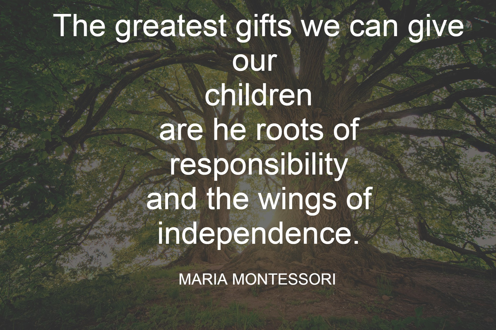

Normalization is one of the most essential concepts in Montessori education. It describes the process in which children develop the ability to concentrate deeply, work independently, choose meaningful tasks, and experience inner calm and purpose. Normalization does not mean a child was ever “abnormal.” Instead, it means the child has found meaningful work and is becoming their best self. Montessori explained, “The child who has normalized is one who has found his place in the world.” (Montessori, 1949)
Children may seem restless or unfocused. This does not mean they are misbehaving—they simply have not yet found purposeful work that meets their developmental needs.
As children work with hands-on Montessori materials, they begin to develop deep concentration. Montessori said, “The first essential for the child’s development is concentration.” (1970)
In Elementary classrooms, normalization looks like:
Montessori wrote, “The greatest sign of success for a teacher is to say, ‘The children are now working as if I did not exist.’”